Propósito
Criar condições para que as famílias vivam melhor o tempo que compartilham.
Alta Vista Residence · Guia de Identidade Visual
Essência, expressão e consistência — uma marca construída a partir do lago, das margens e da vida em família.
Percurso
Este guia reúne a essência e o sistema visual do Alta Vista Residence. Sua função é orientar uma comunicação reconhecível, elegante e próxima das famílias que buscam uma rotina com mais espaço e tranquilidade.
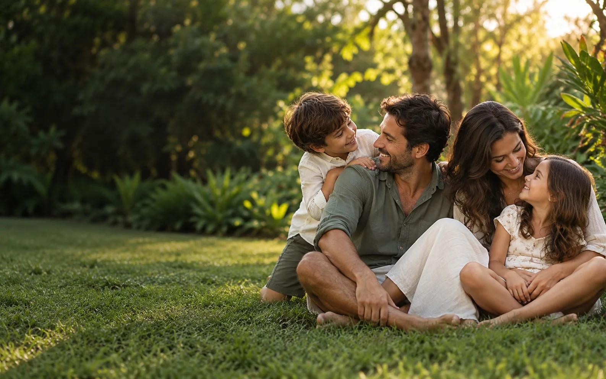
01 / Alta Vista Residence
A casa faz parte de uma escolha maior: como queremos viver o tempo que compartilhamos.
Essência
O Alta Vista Residence se dirige a famílias com filhos que desejam conforto, privacidade e uma relação mais tranquila com o cotidiano. A natureza é parte central dessa experiência e da forma como a marca se apresenta.
Criar condições para que as famílias vivam melhor o tempo que compartilham.
Um lugar pensado para acolher uma rotina familiar mais tranquila.
Acolhedora, serena, elegante, cuidadosa e discreta.
A frase de campanha traduz a direção criativa. Não integra o lettering da logo e não precisa estar presente em todas as peças.
Nome e posicionamento
Alta expressa uma expectativa elevada de conforto e cuidado.
Vista convida a imaginar outra perspectiva para o cotidiano.
Presença, convivência e acolhimento.
Espaço para construir uma casa adequada à vida da família.
O lago preservado como presença e identidade da paisagem.
Conforto, privacidade e estrutura de condomínio fechado.
Esta é uma interpretação de marca; o nome não pressupõe altitude ou vista panorâmica do terreno. Alta Vista Residence é a marca do empreendimento; o endosso institucional da incorporadora permanece secundário.
Quem realiza
A AVRA é uma incorporadora de alto padrão de Boa Vista, Roraima, guiada por uma ideia: criar lugares onde a vida respira. O Alta Vista Residence, condomínio fechado de lotes, é o seu primeiro empreendimento.
Conhecer a marca AVRAAlta Vista Residence é a marca do empreendimento e aparece em primeiro plano. A AVRA entra como endosso institucional, sempre secundário, em menor escala e com área de respiro.
Linguagem verbal
A marca fala com famílias sobre a experiência de morar. Prefere cenas e benefícios concretos a expressões genéricas de luxo. O tom transmite cuidado e segurança, com linguagem simples.
“Segurança total”, “silêncio absoluto”, áreas, preços e atividades no lago só podem aparecer quando houver fundamento e validação específicos.
02 / Origem do símbolo
O Alta Vista Residence nasce ao redor de um lago de preservação natural. Ele não fica nos fundos nem na borda do terreno: ocupa o coração do lugar. A marca começa exatamente aí.
Construção do símbolo
Antes de qualquer traço, existe a água. Uma área de preservação natural no centro do terreno, que permanece como está: lago, mata e silêncio no coração do bairro.
Como a onda que se abre quando uma folha toca a água, cada contorno se afasta do centro. São as margens: a vegetação que protege o lago e os caminhos que o contornam.
Nos anéis mais externos estão as casas, a convivência e a rotina das famílias. Quem mora no Alta Vista vive ao redor do lago e cuida dele.
Quando os contornos se fecham, nasce um selo orgânico, sem cantos. O vazio do centro continua sendo o lago: um espaço que não se ocupa, se protege.
O lettering serifado chega com presença e elegância, e as curvas dos A respondem às margens do símbolo. Um lago no centro. Uma marca ao redor dele.
Leitura conceitual do desenho: o emblema não reproduz o levantamento topográfico nem o contorno geográfico real do lago.
Versões
Passe o mouseToque para ver a área de proteção
Definir x como um quarto da largura do símbolo. Manter ao menos x de espaço livre ao redor da assinatura, sem texto, imagens ou grafismos concorrentes.
A expressão completa da marca. O símbolo, o nome e o descritor mantêm suas relações de proporção e alinhamento.
Arraste para testar o tamanho mínimo. Em aplicações muito pequenas, preferir o símbolo isolado em uma cor.
Fundos
Sobre fotografias, escolher uma área calma e contraste suficiente ou criar uma superfície de apoio. Evitar a assinatura sobre detalhes de alto contraste.
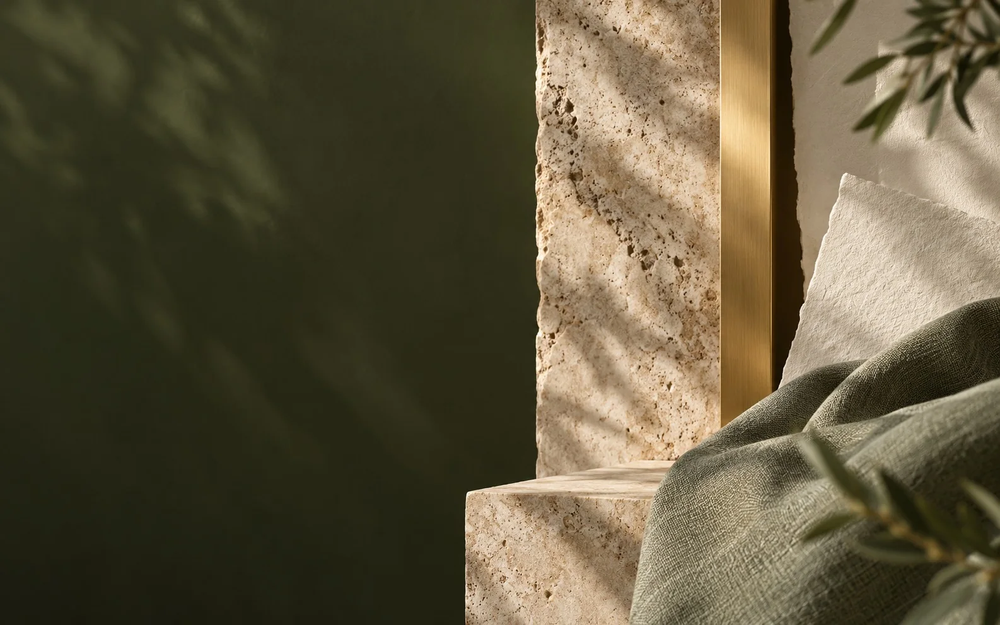
03 / Alta Vista Residence
A natureza constrói a base cromática. O dourado aparece como detalhe de elegância e acabamento.
Paleta
Passe o mouse para expandir · cliqueToque para copiar o HEX
*CMYK de referência, obtido por conversão matemática. Ajustar ao perfil, papel e processo da gráfica; não equivale a uma especificação Pantone.
Alta Vista Residence
Alta Vista Residence
Alta Vista Residence
Alta Vista Residence
Priorizar texto Mata sobre Mineral ou Sálvia. Usar dourado como acento; evitar dourado claro em textos pequenos sobre fundos claros.
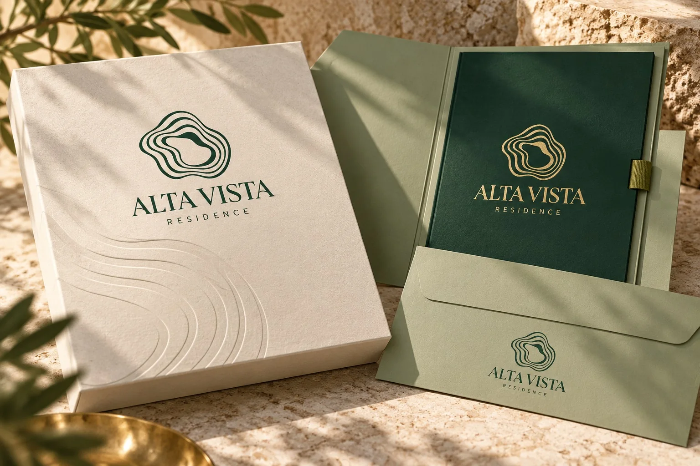
Materialidade
Preferir acabamento acetinado ou escovado. Em papel, avaliar foil; em metal, conferir liga e acabamento por amostra física.
Papéis texturizados, tecidos, madeira e pedra reforçam o caráter acolhedor. O material deve preservar as linhas e os vazios do selo.
Os códigos digitais simulam cor plana. Selecionar tinta especial ou referência de fornecedor com prova no material; não assumir equivalência metálica por HEX.
04 / Alta Vista Residence
Marcellus dá voz aos títulos. DM Sans organiza as informações e aproxima a comunicação do cotidiano.
Fontes da marca
Títulos e chamadas · peso 400
Textos, informações e interfaces · pesos 400 e 600
Mais espaço para estar presente.
Á À Â Ã É Ê Í Ó Ô Õ Ú Ü Ç / á à â ã é ê í ó ô õ ú ü ç / 0123456789
Mais espaço. Mais natureza.
Um lugar para a vida em família.
A marca apresenta o empreendimento com proximidade e sobriedade. Manter parágrafos curtos, alinhamento à esquerda e áreas de respiro entre texto, imagem e assinatura.
Informação de apoio / legenda
Usar no máximo duas famílias; evitar textos longos em caixa-alta. Não usar falso negrito nem comprimir as letras. Contingência: Georgia + Arial. As fontes de comunicação não substituem o lettering da logo.
05 / Alta Vista Residence
Fotografia, ícones e o P01 levam a personalidade do selo para além da logo, com sobriedade e espaço para respirar.
Fotografia e ícones
Famílias com filhos em momentos naturais. Luz suave, enquadramentos próximos e paisagem tropical plana. Tratamento quente e verde moderado, com pele natural.
Traço simples, terminais suaves e uma cor. Representar apenas atributos confirmados. Evitar ícones decorativos sem função.
As imagens deste guia são ilustrativas. Fotografias de comercialização devem ser compatíveis com a paisagem e os atributos reais do projeto.
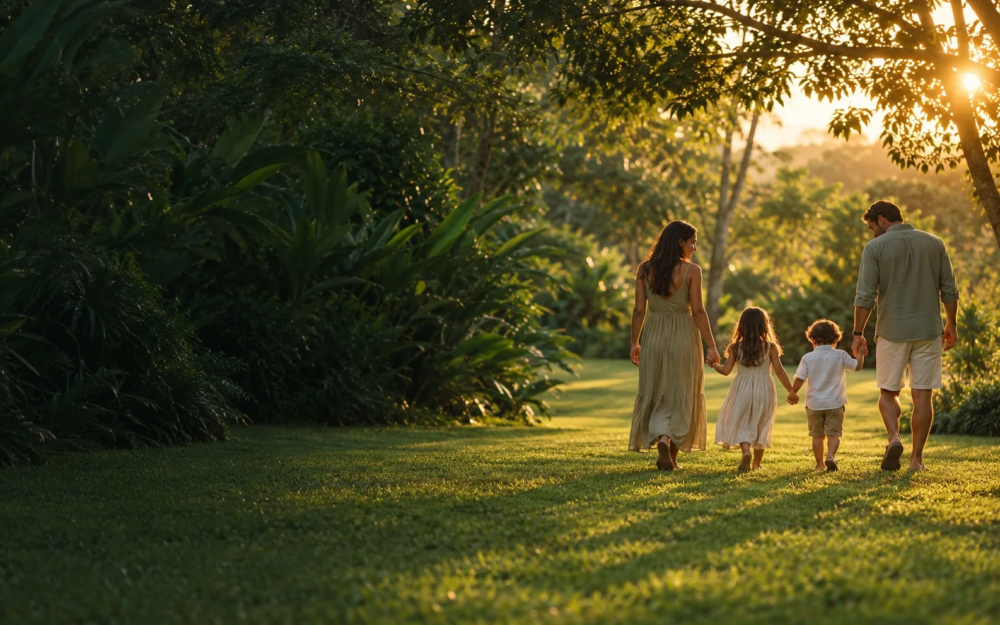
06 / Alta Vista Residence
A mesma identidade se adapta ao espaço urbano, ao contato comercial e ao cotidiano das famílias.
Estúdio 3D
Arraste para girar · cliquetoque para interagir
Campanha de tapume
A alternância entre imagem, assinatura e P01 cria ritmo e leitura à distância.
Mais espaço para estar presente.
Aplicações
01 / 10
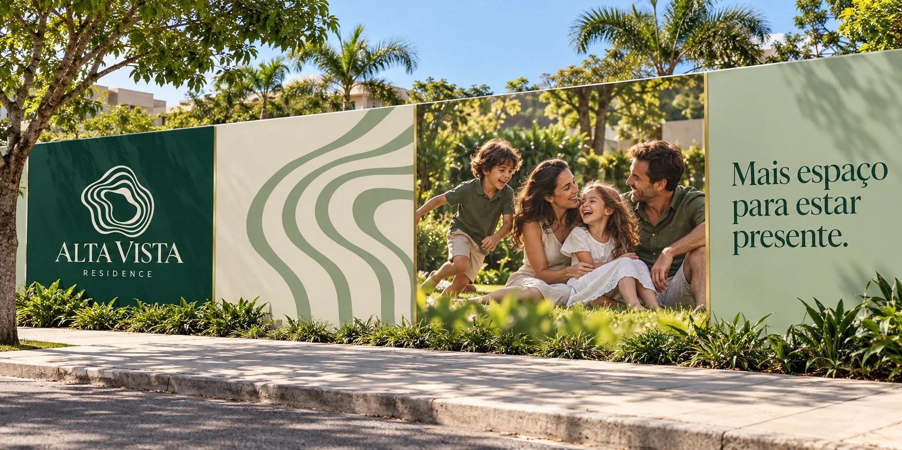
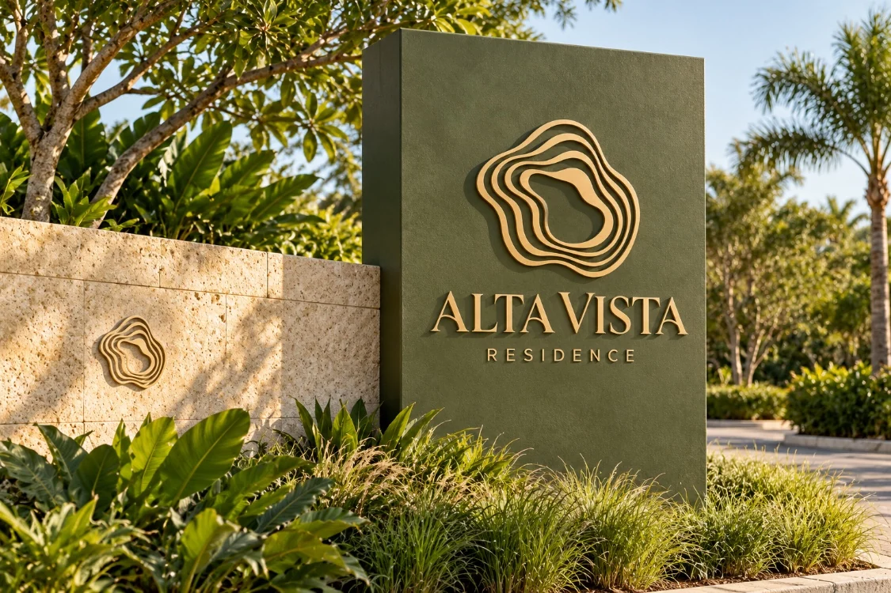
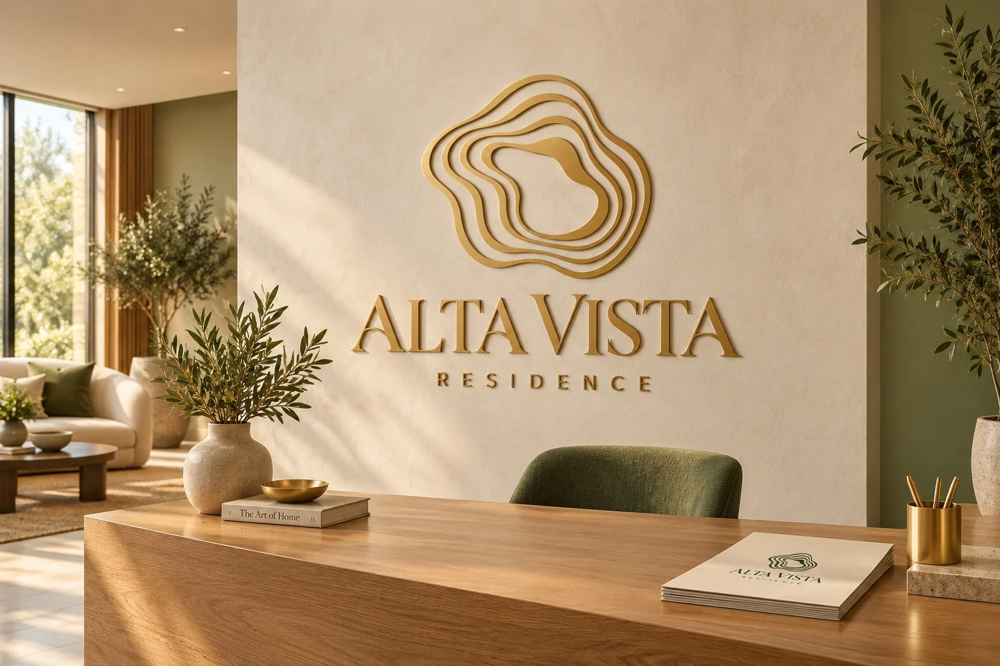
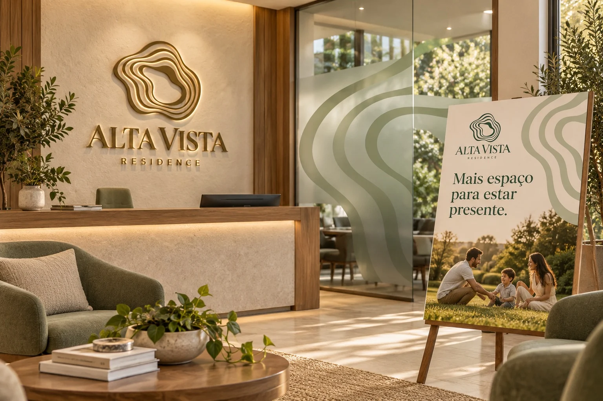
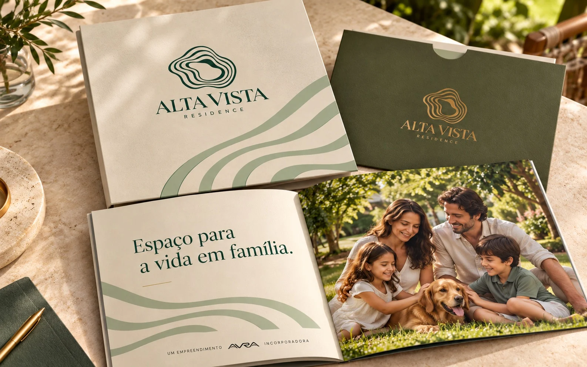
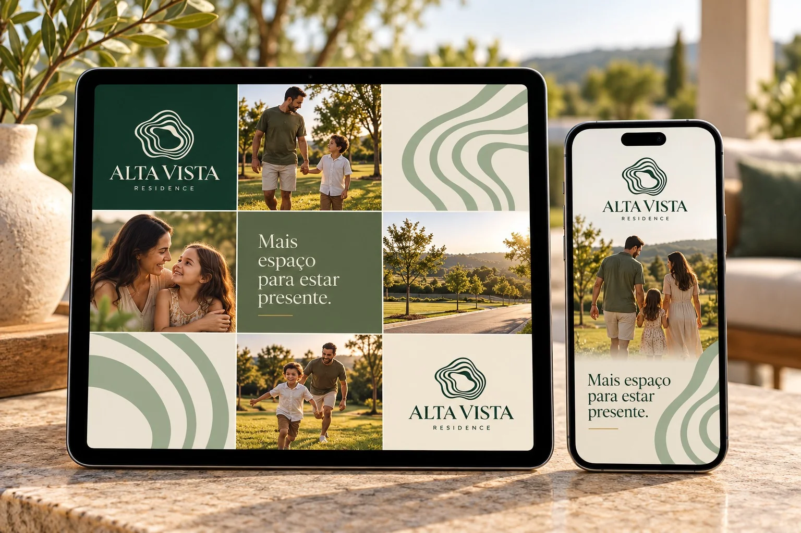
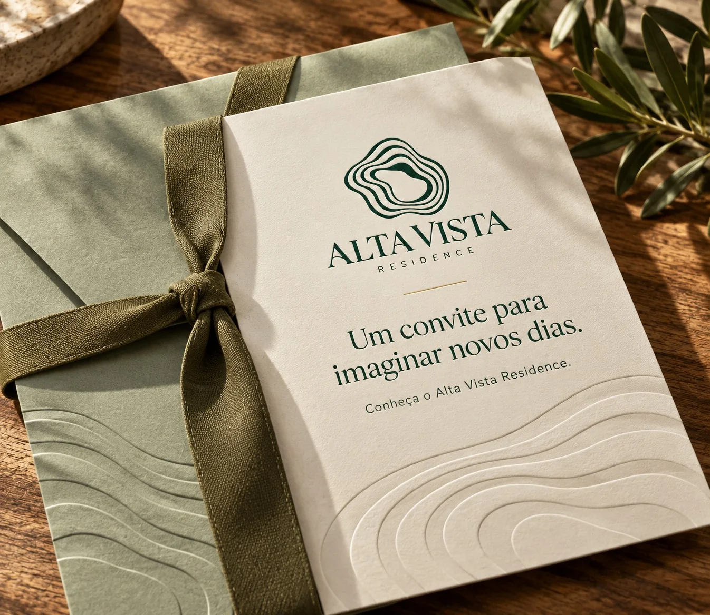
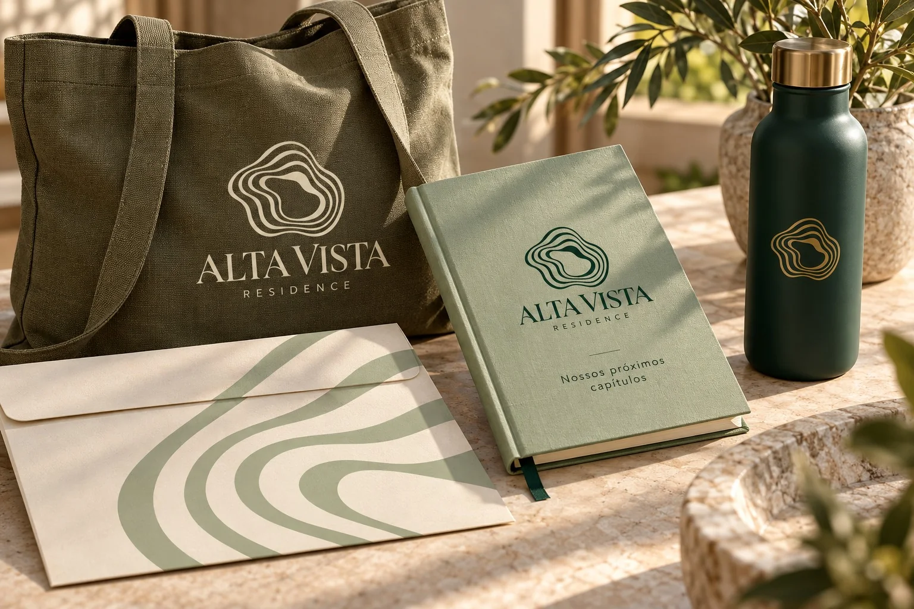
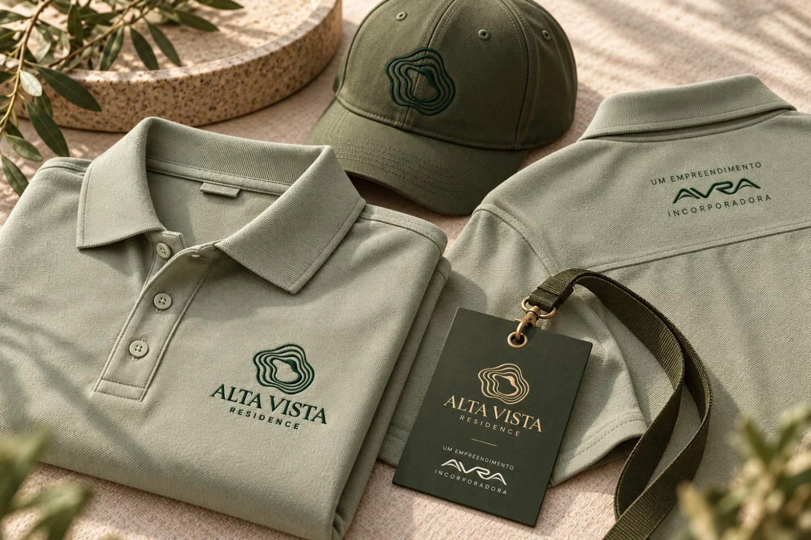
Arquivos e produção
O pacote de apoio reúne versões da marca em SVG e PNG, o elemento P01 editável, a paleta digital, fontes com licenças e os mockups usados neste guia.
Usar os arquivos em contornos fornecidos. Conferir a versão de cor, o formato e a área de proteção antes de diagramar.
Definir perfil de impressão, material e acabamento com o fornecedor. Validar espessuras e vazios por prova em escala real.
Atualizar textos comerciais com informações confirmadas. Manter arquitetura, imagens ilustrativas e fotografias do projeto claramente distinguíveis.
Desenvolvido por
Nome, conceito, símbolo, sistema visual, guia de identidade e esta experiência digital do Alta Vista Residence foram desenvolvidos pela BRITTO* GROUP para a AVRA Incorporadora.
Mais espaço
Instagram e stories
Uma composição que pode ser repetida.
Mais espaço para estar presente.
Mais espaço para estar presente.